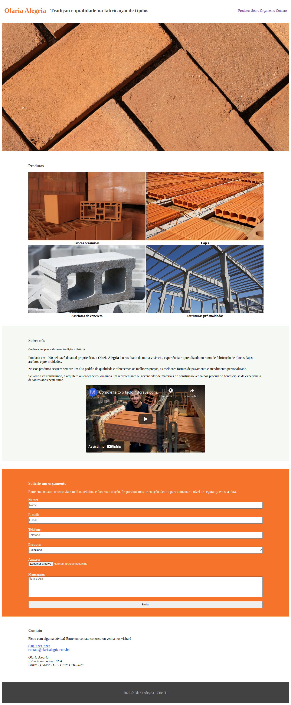

Alguns projetos finalizados até o momento.

CrieFlix é um projeto feito junto com o Professor da disciplina de web do curso CRIE_TI onde aprendemos a desenvolver o site com HTML e CSS e utilizando a mesma estrutura html fizemos a versão mobile.

Primeiro Projeto desenvolvido para a disciplina de web do curso CRIE_TI, onde fomos desafiados e fazer um site com a mesma estrutura que havia nos prints disponbilizados.

Primeiro Projeto feito junto com professor da disciplina de web do curso CRIE_TI, onde aprendemos a utilizar os diferentes tipos de CSS e estruturas HTML